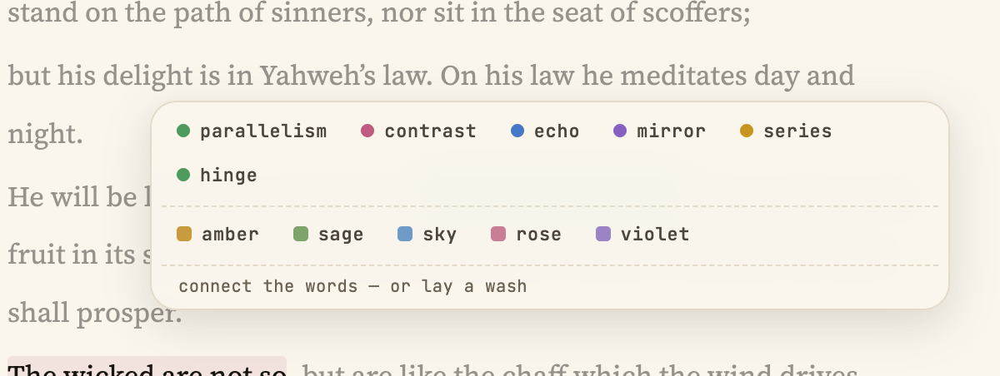
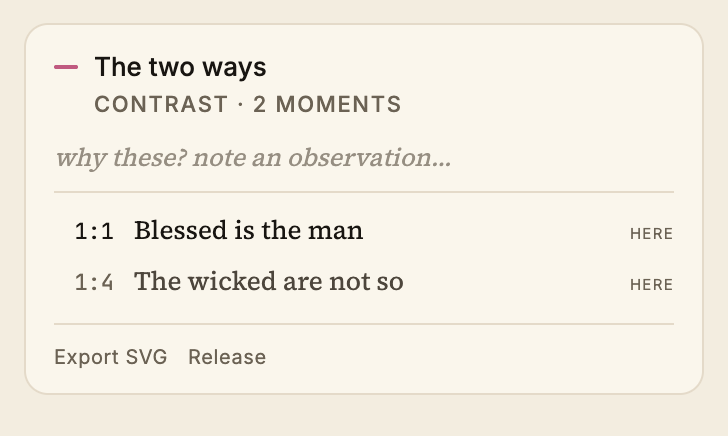
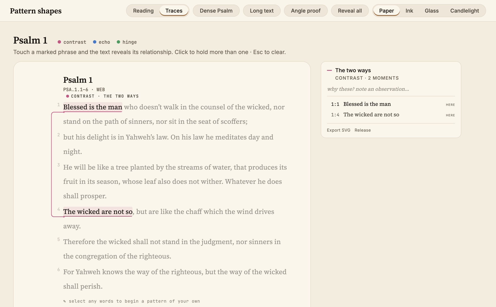
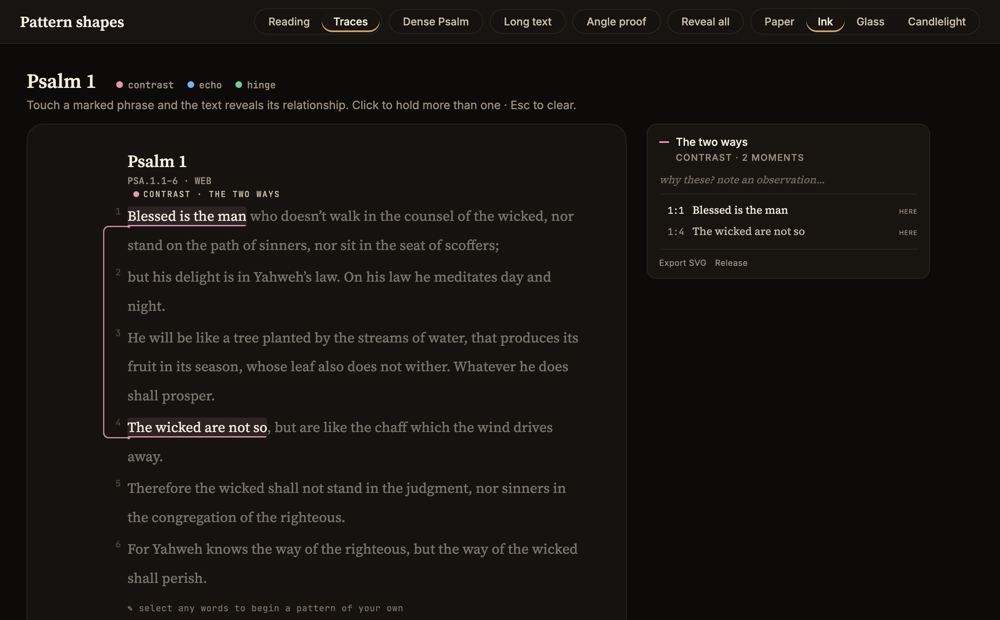

Pericope · Lab
Connections between marked phrases, drawn so quietly they read as part of the page. One line vocabulary, one authoring menu, one card — the system now being prepared for the app.
Every connector is built from three moves and nothing else: a horizontal colinear with the underline, a vertical in the margin, and one soft right-angle corner. These four figures are rendered directly by the routing engine.
Select words and one compact bar offers both: the connection kinds above, five sober highlight washes below. Connect the words — or lay a wash.

One card, and only when a connection is held: the relationship you clicked, its observation, and its moments — each row a way back into the text. Nothing to browse, nothing standing; release it and the margin is just a margin again.

The whole system at reading scale — the held contrast in Psalm 1 draws one bracket down the left margin while its card waits quietly at the right. The same surface in Paper and Ink.

